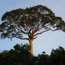

Plant Grimoire

CeibaThe ceiba (Ceiba pentandra), also known as the silk cotton tree or kapok tree, is one of the most sacred trees in Mesoamerican, Caribbean, and African Diaspora traditions. It serves as a world tree or cosmic axis in Maya cosmology and is venerated in Yoruba-derived religions.
Sacred Status
In African Diaspora traditions including Santeria/Lucumi and Haitian Vodou, the ceiba is considered a sacred dwelling place of orishas and lwa. It is treated with great ceremonial respect. Within African folk tradition, the ceiba is sometimes used as a substitute for the iroko tree when the latter is unavailable.
Magickal Uses
The ceiba's wood, bark, and spiritual presence are used in protective and ceremonial workings. As a child protection material, ceiba wood may be hung near a baby's sleeping area in traditions where iroko is the primary protective tree but unavailable.